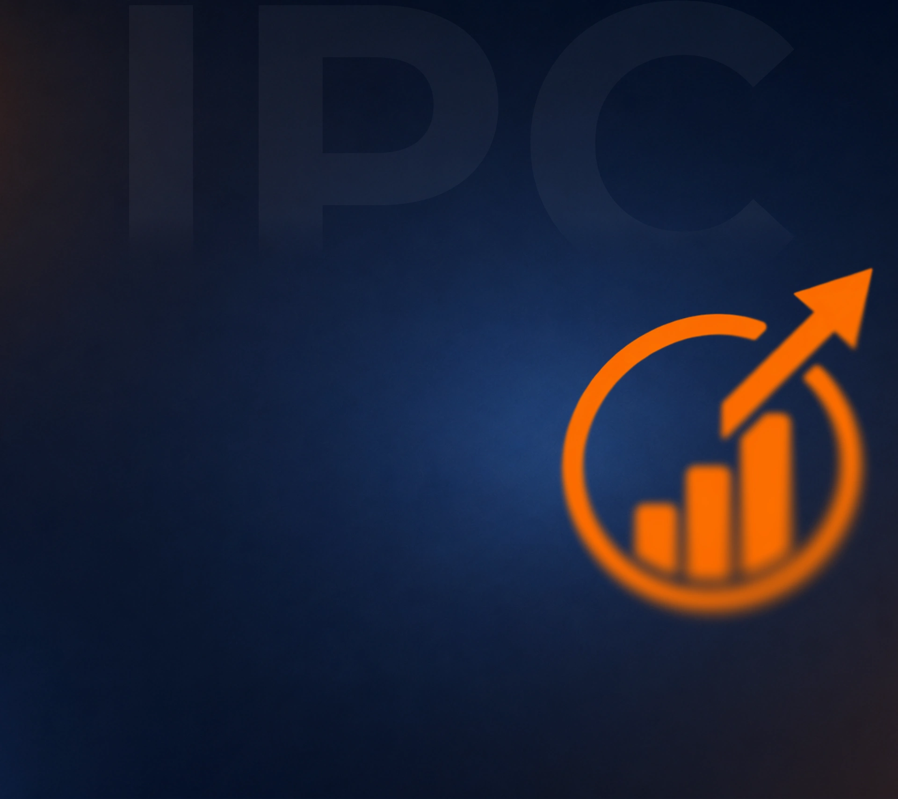
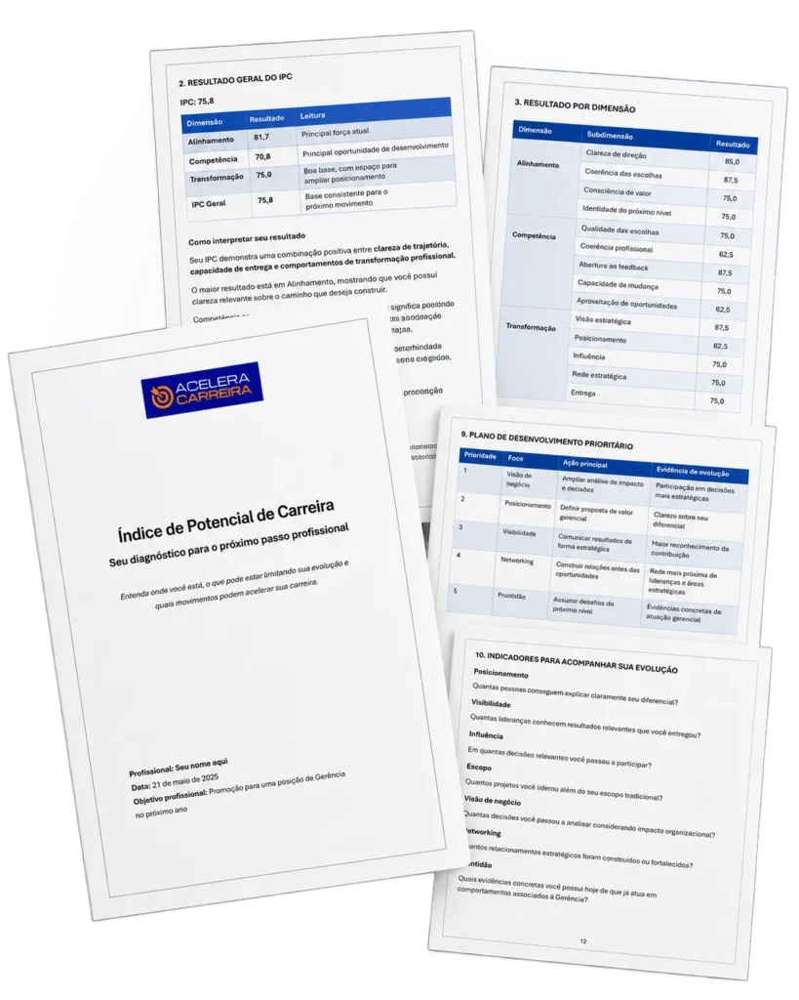

O IPC analisa 30 variáveis profissionais e mostra o que está impulsionando sua carreira, onde estão os gargalos e o que priorizar.

Talvez o problema não seja falta de competência. Talvez seja não saber o que precisa mudar.
Você sabe para onde está indo?
Você possui e aplica os recursos exigidos pelo próximo nível?
O mercado consegue perceber o valor que você entrega?
60 situações profissionais, em 20 a 30 minutos.
Cada resposta tem peso diferente e passa por checagem de coerência.
Relatório no seu e-mail em 3 a 5 dias úteis.
Siga o plano de ação com as prioridades certas.
Garantia de 7 dias com reembolso integral.
ou 12x de R$ 25,75
ou 12x de R$ 58,25
Não. É um diagnóstico de carreira, focado em comportamento profissional e prioridades de desenvolvimento.
Não. Ele mostra com clareza o que mudar. A evolução depende de colocar o plano em prática.
O IPC foi pensado para carreira corporativa, em empresas privadas.
De 3 a 5 dias úteis depois de responder, direto no seu e-mail.